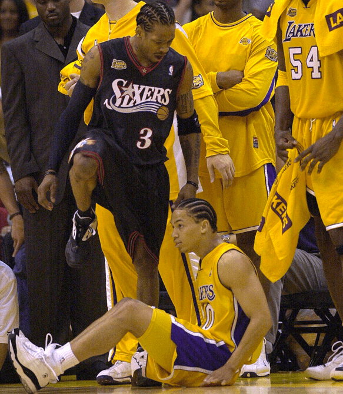

 Mój ulubiony sport
Moim zainteresowaniem jest koszykowka. Gram w nią od około 3 lat. Pasjonuje mnie w niej jej szybkość i kreatywność. Jestem karzełkiem więc gram raczej na pozycji rozgrywającego, muszę mieć dobry kozioł i rzut żeby być dobry. Dotychczas grałem w mniejszym klubiku i treningi nie były takie ciężkie, a teraz z drużyną przeszliśmy do lepszej drużyny dziki warsaw. Treningi są turbo ciężkie i mnie męczą dlatego po cięższych treningach chodzę spać.
Serdrecznie to polecam. Spanie jest też moim zainteresowaniem. Spanie daje w pewnym sensie ucieczka od stresu przed na przykład szkołą. Idąc dalej koszykówka jest bardzo fajna daje spokój duszy i inny swiat przez co nie musze myśleć o matematyce. Nigdy w niej nie możne byc idealnym przez co ciągle można byc lepszym, ulepszaś się więc nigdy się nie nudzi, mi przynajmniej. W trakcie grania lubię słuchać muzyki, bo bez niej to stypa trochę, z reguły spokojnej albo agresywnej. Ja osobiście preferuje spokojną bo w agresynej trzeba mieć jakiś hard-workout bo inaczej to tak dziwnie.
W trakcie przerw polecam odstresowanie się. Ja osobiście gram w subway surfers albo fortnite. Gry te pomagają mi osiągnąć maksimum potencjalnego skupienia w mojej głowie, żeby potem móc lepiej zagrać. I tak grzeje ławe lol.